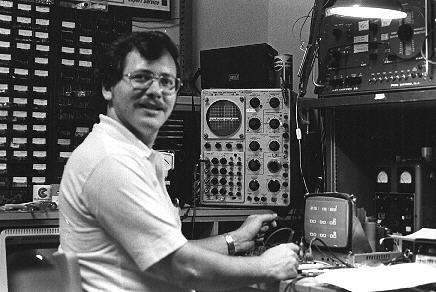
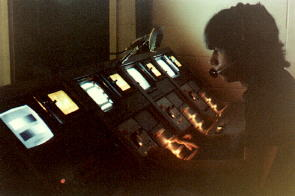
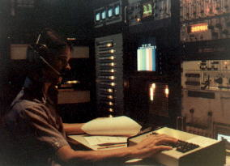
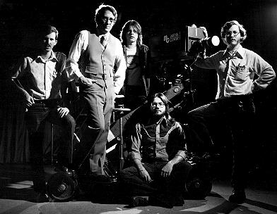

The Media Center
Facilities I designed and built while working for the University of Mississippi, 1973-1979

Here is Bill Caruthers at the camera control units for the Norelco studio cameras.
The Norelco cameras were probably the biggest investment the University
made in the facilities at the time.
They were miles ahead of those awful IVC-90 cameras we had started out with.
Bill now is senior editor of the Nightly Business Report at WPBT-TV in Miami.
Here, he is shading camera for a "Guten-Tag" program in German, starring
Dr. George Everett.
He's either "getting the red out", or "there's too much jello in the picture".

This is Paul Fredericks at the distribution and routing center, where exciting
instructional material got sent out to the teeming masses in Bishop #102.
Last I heard from Paul, he was working for an Oil and Gas exploration company,
and was living in Singapore.
Paul had degrees in about four things, like Math, Physics, Geology, and something
else.

Here is the staff (before Marty joined us) posing with an ancient Houston Fearless
crab-dolly donated by NASA, and an equally ancient IVC-90 color camera.
Shown are: (L to R) Russel Lamb, (who still lives in Oxford), Jack B. Lacy, (who was last heard
from working for the Mississippi Attorney General), Bill Caruthers, (Now with WPBT-TV in Miami),
David Cole, (who has his own consulting firm in Washington D.C.), and David Sieg (me).
Photo by Eddie Clement